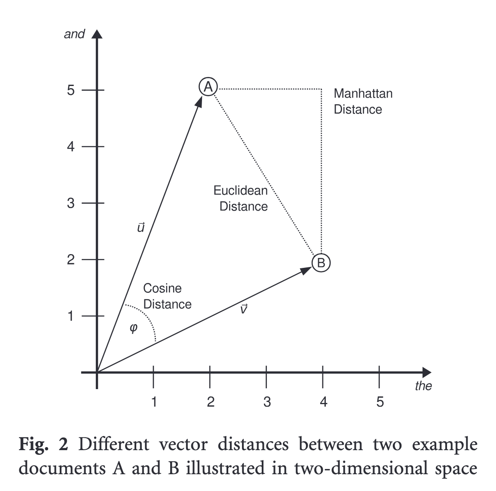
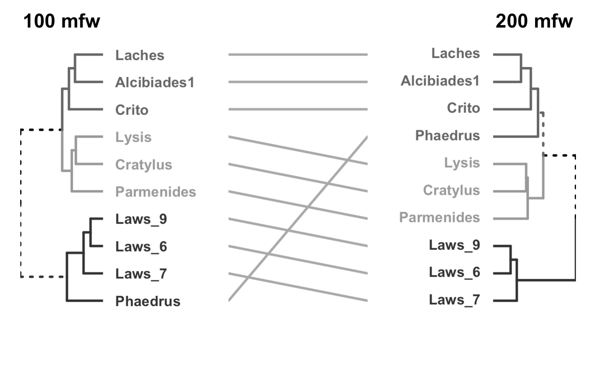
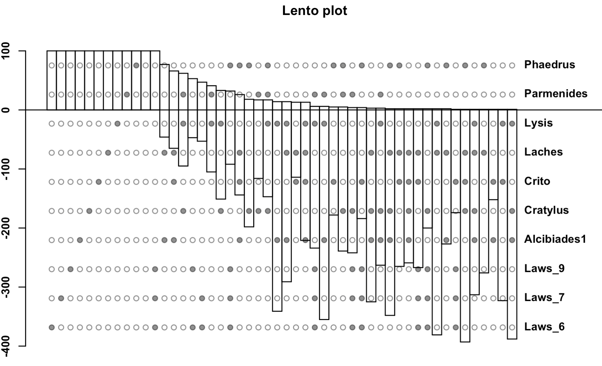
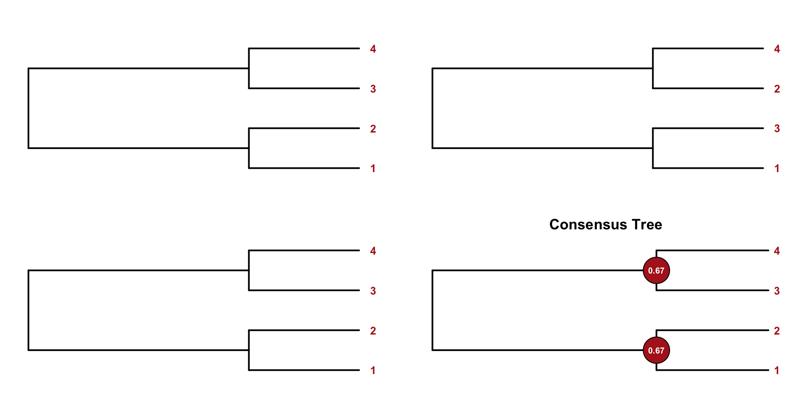
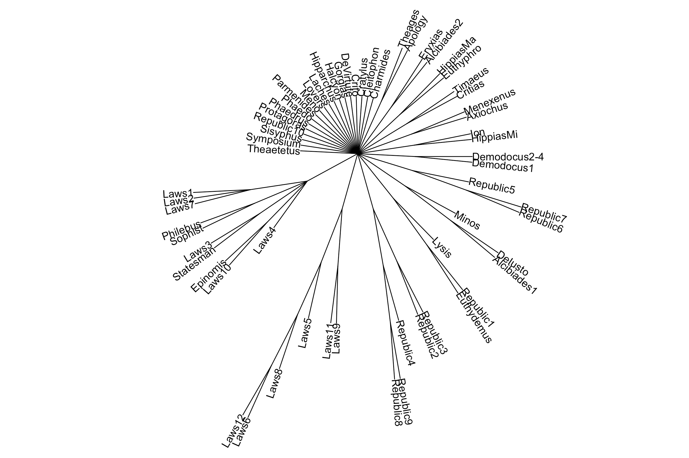
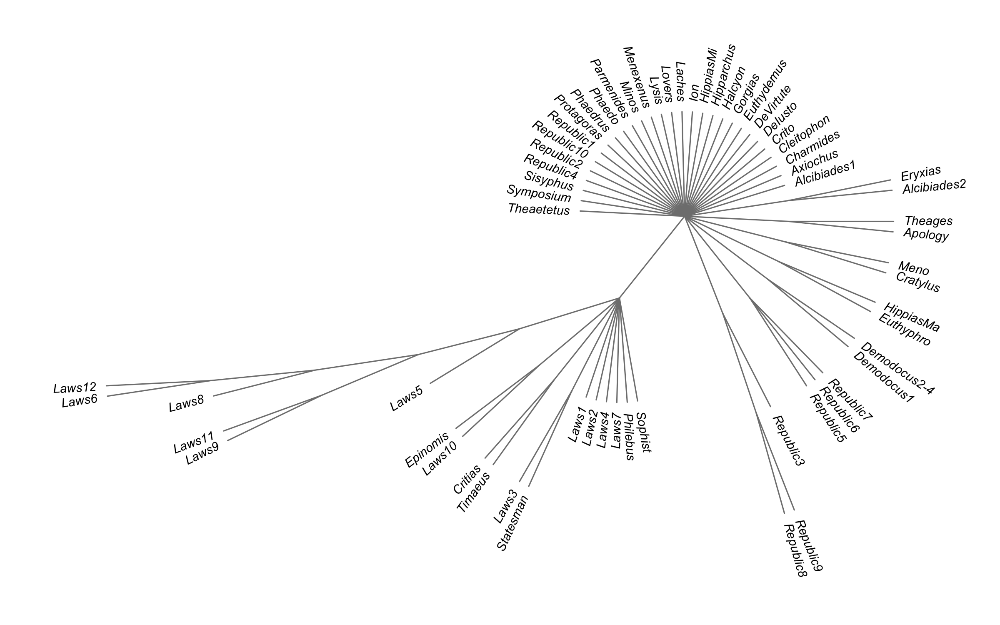
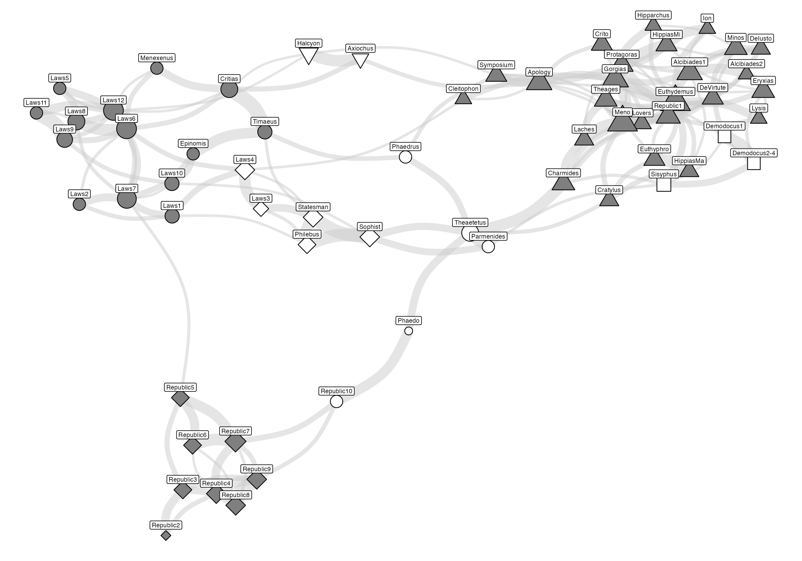
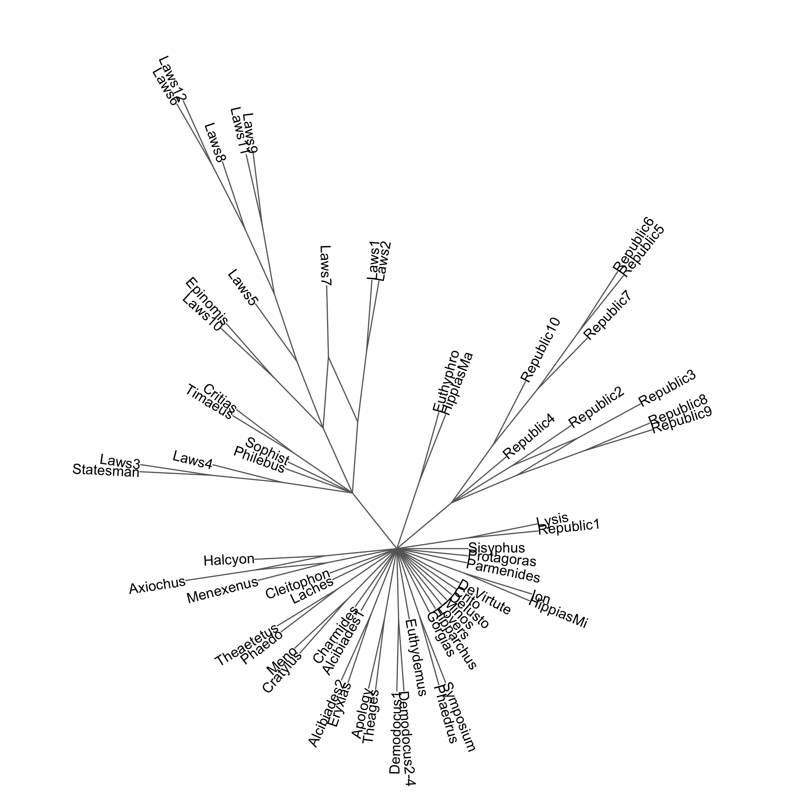
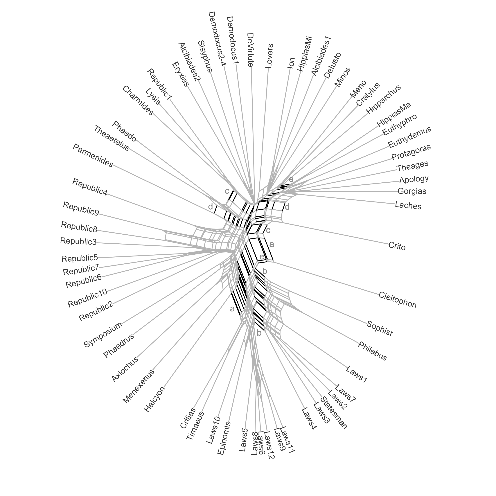

| title | αὐτὸ | αὐτῶν | αὐτῷ | αὖ | γάρ | γε | γὰρ | δ | δέ | δή | δεῖ | διὰ | δοκεῖ | δὲ | δὴ | εἰ | εἰς | εἴη | εἶναι | κατὰ | καὶ | λέγειν | λέγεις | μετὰ | μοι | μὲν | μὴ | μᾶλλον | ναί | νῦν | οἱ | οὐ | οὐδὲ | οὐδὲν | οὐκ | οὐκοῦν | οὐχ | οὔ | οὔτε | οὕτω | οὕτως | οὖν | πάντα | πάνυ | περὶ | που | πρὸς | πῶς | σοι | σώκρατες | σὺ | τί | ταῦτα | τε | τι | τις | τούτων | τοὺς | τοῖς | τοῦ | τοῦτο | τὰ | τὰς | τὴν | τὸ | τὸν | τῆς | τῇ | τῶν | τῷ | ἀλλ | ἀλλὰ | ἂν | ἃ | ἄλλο | ἄλλων | ἄν | ἄρα | ἐγὼ | ἐκ | ἐν | ἐπὶ | ἐστιν | ἐὰν | ἔστιν | ἔτι | ἡ | ἡμῖν | ἢ | ἦν | ὀρθῶς | ὁ | ὃ | ὅταν | ὅτι | ὑπὸ | ὡς | ὥσπερ | ὦ | ὧν |
|---|---|---|---|---|---|---|---|---|---|---|---|---|---|---|---|---|---|---|---|---|---|---|---|---|---|---|---|---|---|---|---|---|---|---|---|---|---|---|---|---|---|---|---|---|---|---|---|---|---|---|---|---|---|---|---|---|---|---|---|---|---|---|---|---|---|---|---|---|---|---|---|---|---|---|---|---|---|---|---|---|---|---|---|---|---|---|---|---|---|---|---|---|---|---|---|---|---|---|---|---|
| Alcibiades1 | 0.002 | 0.002 | 0.001 | 0.002 | 0.003 | 0.012 | 0.008 | 0.007 | 0.004 | 0.002 | 0.002 | 0.002 | 0.003 | 0.012 | 0.003 | 0.007 | 0.006 | 0.001 | 0.005 | 0.002 | 0.047 | 0.001 | 0.006 | 0.000 | 0.002 | 0.009 | 0.006 | 0.000 | 0.008 | 0.002 | 0.004 | 0.010 | 0.002 | 0.001 | 0.010 | 0.005 | 0.002 | 0.004 | 0.001 | 0.002 | 0.002 | 0.009 | 0.001 | 0.003 | 0.007 | 0.001 | 0.005 | 0.005 | 0.004 | 0.005 | 0.004 | 0.009 | 0.003 | 0.009 | 0.004 | 0.002 | 0.002 | 0.004 | 0.003 | 0.006 | 0.005 | 0.011 | 0.001 | 0.005 | 0.010 | 0.005 | 0.003 | 0.003 | 0.010 | 0.004 | 0.005 | 0.006 | 0.010 | 0.001 | 0.002 | 0.001 | 0.002 | 0.006 | 0.003 | 0.001 | 0.007 | 0.002 | 0.001 | 0.001 | 0.001 | 0.001 | 0.003 | 0.001 | 0.010 | 0.001 | 0.002 | 0.008 | 0.002 | 0.003 | 0.011 | 0.001 | 0.006 | 0.002 | 0.009 | 0.002 |
| Alcibiades2 | 0.001 | 0.003 | 0.002 | 0.001 | 0.003 | 0.009 | 0.008 | 0.006 | 0.004 | 0.001 | 0.002 | 0.003 | 0.010 | 0.014 | 0.002 | 0.005 | 0.002 | 0.001 | 0.010 | 0.001 | 0.050 | 0.002 | 0.001 | 0.000 | 0.004 | 0.013 | 0.005 | 0.002 | 0.001 | 0.002 | 0.006 | 0.008 | 0.002 | 0.001 | 0.007 | 0.005 | 0.001 | 0.002 | 0.002 | 0.001 | 0.004 | 0.010 | 0.002 | 0.002 | 0.002 | 0.000 | 0.007 | 0.002 | 0.007 | 0.004 | 0.001 | 0.003 | 0.003 | 0.010 | 0.006 | 0.004 | 0.005 | 0.006 | 0.003 | 0.006 | 0.002 | 0.006 | 0.001 | 0.009 | 0.007 | 0.009 | 0.004 | 0.002 | 0.009 | 0.003 | 0.005 | 0.006 | 0.012 | 0.001 | 0.001 | 0.001 | 0.004 | 0.002 | 0.001 | 0.000 | 0.004 | 0.001 | 0.002 | 0.001 | 0.001 | 0.003 | 0.002 | 0.001 | 0.013 | 0.002 | 0.002 | 0.003 | 0.001 | 0.001 | 0.003 | 0.001 | 0.006 | 0.003 | 0.006 | 0.001 |
| Apology | 0.001 | 0.003 | 0.001 | 0.001 | 0.003 | 0.004 | 0.012 | 0.004 | 0.002 | 0.002 | 0.002 | 0.001 | 0.001 | 0.014 | 0.005 | 0.008 | 0.002 | 0.002 | 0.008 | 0.001 | 0.053 | 0.002 | 0.001 | 0.001 | 0.007 | 0.011 | 0.006 | 0.002 | 0.000 | 0.003 | 0.008 | 0.008 | 0.003 | 0.004 | 0.006 | 0.000 | 0.001 | 0.001 | 0.003 | 0.001 | 0.002 | 0.008 | 0.000 | 0.002 | 0.003 | 0.001 | 0.004 | 0.000 | 0.001 | 0.001 | 0.001 | 0.003 | 0.005 | 0.005 | 0.005 | 0.004 | 0.002 | 0.006 | 0.002 | 0.006 | 0.005 | 0.004 | 0.001 | 0.005 | 0.005 | 0.004 | 0.003 | 0.003 | 0.008 | 0.005 | 0.006 | 0.005 | 0.010 | 0.002 | 0.000 | 0.001 | 0.003 | 0.001 | 0.009 | 0.001 | 0.006 | 0.003 | 0.003 | 0.001 | 0.002 | 0.001 | 0.003 | 0.001 | 0.010 | 0.001 | 0.000 | 0.004 | 0.001 | 0.000 | 0.010 | 0.002 | 0.007 | 0.004 | 0.012 | 0.002 |
| Axiochus | 0.000 | 0.000 | 0.002 | 0.000 | 0.004 | 0.002 | 0.011 | 0.003 | 0.001 | 0.000 | 0.001 | 0.003 | 0.000 | 0.029 | 0.001 | 0.003 | 0.011 | 0.001 | 0.000 | 0.003 | 0.060 | 0.000 | 0.001 | 0.002 | 0.005 | 0.012 | 0.001 | 0.000 | 0.000 | 0.002 | 0.006 | 0.005 | 0.002 | 0.001 | 0.009 | 0.000 | 0.001 | 0.000 | 0.003 | 0.000 | 0.002 | 0.005 | 0.001 | 0.000 | 0.008 | 0.000 | 0.005 | 0.002 | 0.001 | 0.005 | 0.003 | 0.003 | 0.005 | 0.006 | 0.003 | 0.003 | 0.001 | 0.004 | 0.006 | 0.012 | 0.002 | 0.009 | 0.003 | 0.013 | 0.011 | 0.010 | 0.013 | 0.003 | 0.011 | 0.005 | 0.006 | 0.001 | 0.004 | 0.001 | 0.000 | 0.000 | 0.001 | 0.000 | 0.002 | 0.003 | 0.005 | 0.003 | 0.002 | 0.000 | 0.001 | 0.000 | 0.006 | 0.000 | 0.004 | 0.001 | 0.000 | 0.007 | 0.001 | 0.000 | 0.003 | 0.000 | 0.007 | 0.000 | 0.006 | 0.000 |
| Charmides | 0.002 | 0.001 | 0.002 | 0.002 | 0.005 | 0.009 | 0.009 | 0.005 | 0.003 | 0.002 | 0.001 | 0.001 | 0.004 | 0.011 | 0.006 | 0.008 | 0.001 | 0.005 | 0.012 | 0.001 | 0.052 | 0.001 | 0.002 | 0.001 | 0.005 | 0.009 | 0.006 | 0.002 | 0.002 | 0.002 | 0.002 | 0.008 | 0.002 | 0.003 | 0.007 | 0.002 | 0.002 | 0.002 | 0.002 | 0.002 | 0.002 | 0.008 | 0.003 | 0.005 | 0.004 | 0.003 | 0.003 | 0.002 | 0.005 | 0.003 | 0.004 | 0.005 | 0.002 | 0.010 | 0.006 | 0.003 | 0.001 | 0.004 | 0.002 | 0.007 | 0.005 | 0.010 | 0.001 | 0.006 | 0.014 | 0.005 | 0.005 | 0.003 | 0.010 | 0.003 | 0.007 | 0.006 | 0.009 | 0.003 | 0.002 | 0.003 | 0.002 | 0.003 | 0.003 | 0.002 | 0.005 | 0.001 | 0.003 | 0.001 | 0.003 | 0.002 | 0.007 | 0.003 | 0.009 | 0.002 | 0.002 | 0.007 | 0.003 | 0.001 | 0.011 | 0.001 | 0.007 | 0.001 | 0.008 | 0.001 |
Stylometry Against Stylometry
Testing Plato’s Chronology with Phylogenetic Methods
Olga Alieva
May 28, 2025
1: Objectives
- To reassess the standard tripartite chronology of Platonic dialogues
- Dialogues categorized as early, middle, and late
- Widely accepted by Developmentalists (Guthrie, Vlastos) and Unitarists (Kahn)
- To evaluate phylogenetic clustering methods in literary stylometry
- Phylogeny: evolution-based classification (trees, clusters)
- Phenetic (distance-based) methods: no assumption of lineage
2: Key Issues in Stylometry of Plato
- No reliable dates for most dialogues
- Only one clear source: Aristotle says Laws > Republic
- Classification vs Regression:
- We are predicting categories, not numeric years
- Therefore, focus = Clustering (Unsupervised Learning)
3: Step One: Build Document-Term Matrices (DTMs)
- Represent documents numerically: most Frequent Words (MFW)
4: Step Two: Measuring Distance
- Distance metric: Cosine Similarity with standardization (Würzburg Delta)

5: Step Three: Hierarchical clustering
- Visualize clusters → dendrograms
- Unstable results:
- Sensitive to # of MFW, distance metric, linkage method
- Different algorithms yield different trees
- Solution: Use many trees → measure stability

6: Bootstrap to the Rescue
- Bootstrap sampling (over features) to confirm:
- Are clusters real or accidental?
- Assess support/conflict for each split:
- Lento plots
- Consensus trees

7: Terms You’ll Hear Often
- Split = binary partition of a tree
- Support = how often the split appears
- Conflict = how many opposing splits exist
- Lento Plot: visual summary of the above across many trees

9: Consensus Trees: General Idea

10: Stylo Consesus Tree
For minimum = 100, maximum = 3000, and increment = 50, stylo will run subsequent analyses for the following frequency bands: 100 MFW, 50–150 MFW, 100–200 MFW, …, 2900–2950 MFW, 2950–3000 MFW. This is an attractive feature because it enables the assessment of similarities between texts across different bands in the frequency spectrum. – Source

11: Phangorn Consensus Tree

12: Consensus Trees vs. Consensus Networks
- Consensus Trees:
- Only show splits > 50%
- Obscure partial / conflicting signals
- More data → more root-connected branches
- Consensus Network
- Captures conflicting or partial support
- Widely used in: linguistics, genetics, anthropology
- Shows ambivalent affiliations between texts
13: Stylo Network
- Stylo method:
- Scores for 1st, 2nd, 3rd neighbors
- Aggregated into weighted edges (1–66)
- Visualized with igraph + ggraph
- Clustered

15: Bootstrapped Tree Networks (Phangorn)

16: NeighborNet Method
- Builds graph directly from distance matrix
- Works in two steps:
- constructs a circular collection of splits (partitions);
- calculates weights for the splits (least squares method)

17: Key Observations
- “Late” cluster dominates every experiment, but is it really late?
- “Early” group = non-existent in stylometry
- Some stable pairs: e.g., Meno + Cratylus, Lysis + Republic 1
- Texts like Clitophon resist classification
- Pseudoplatonica often cluster with “Socratic” dialogues
18: Feedback
- @locusclassicus
- alieva.mgl@gmail.com
- github.com/locusclassicus
- hse-ru.academia.edu/OlgaAlieva